Confidence is so much more than merely projecting an outer appearance. It starts in our psychology where it manifests externally and affects every facet of our daily life, especially when interacting with others.
Building confidence is central to what we do at Influx.
We generate confidence with each other, our managers, our team members, our clients, our client’s managers, and our client’s customers. With a global workforce working 24/7, building confidence regionally and across time zones is essential.
To better explain how we do it, here’s a slide deck that our CEO and Co-Founder Leni Mayo shares with all new employees. It answers why building confidence is so important with topics from practical ways on creating confidence during video calls to the importance of visual hierarchy while communicating via written messages. For extra insights, scroll down to the presentation notes.
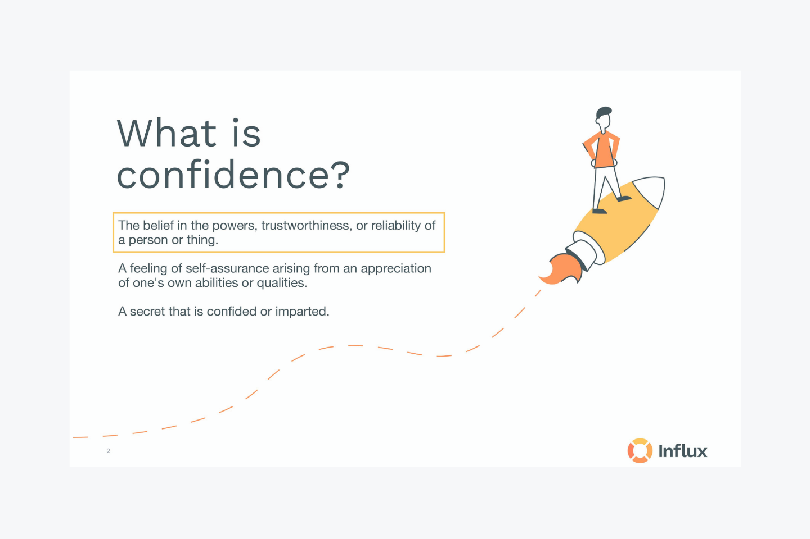
What is confidence? Confidence is the feeling or belief that someone can rely on you. We look for people whom we think other people have confidence in. All relationships between colleagues and subordinates rely on us having confidence.
Confidence that arises from trust is dependent on us developing credibility, reliability, intimacy, and self-orientation.
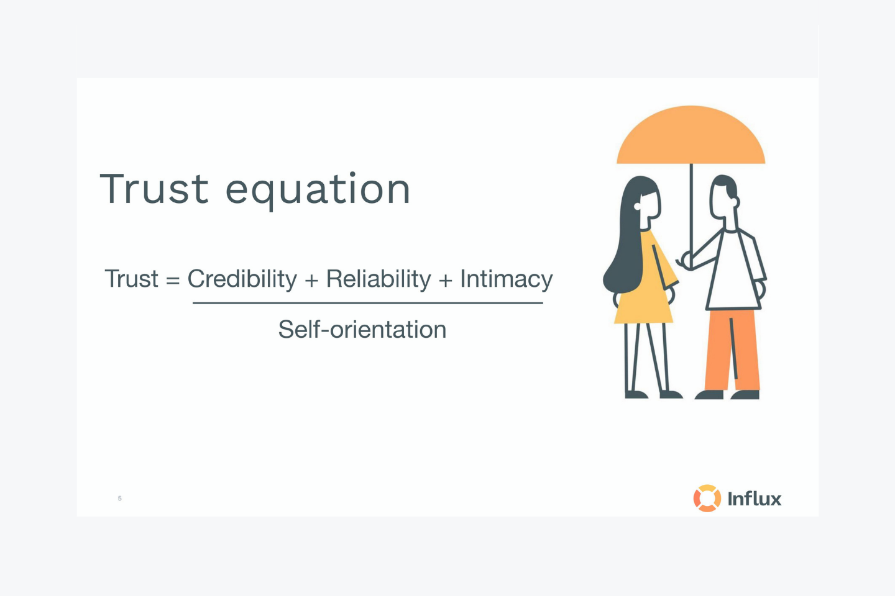
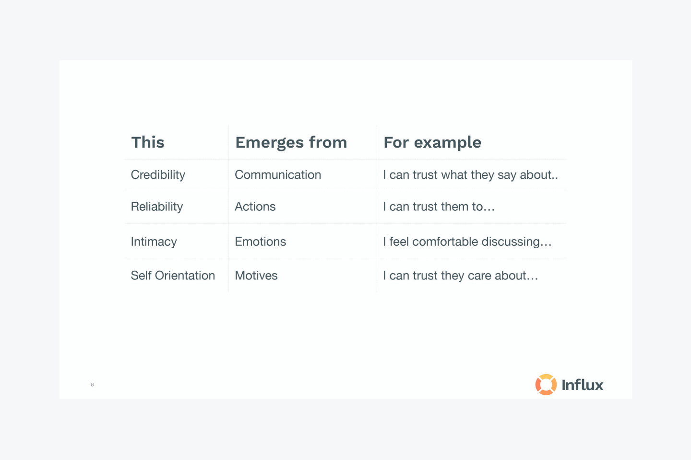
Creating Credibility
Credibility is largely influenced by your communication with other people. And communication hygiene is important. (For video calls) I define it as:
- Having a stable internet connection where one party does not drop out midway through a conversation, and where both parties can maintain eye contact and see facial expressions.
- The lighting is clear and consistent, without any backlighting that casts your face in shadows.
- There is no background noise to cause distractions or disruptions so we can concentrate on the conversation.
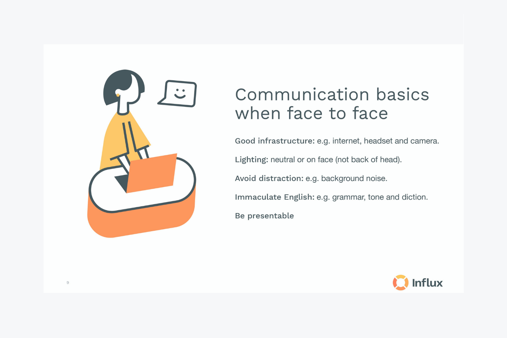
Be Succinct
French philosopher and mathematician Blaise Pascal once said - If I had more time, I would have written a shorter letter.
As more than 80% of our business revolves using email and chat through the written word, succinctness is valued, and formed by the distinctive concepts of Brevity and Clarity.
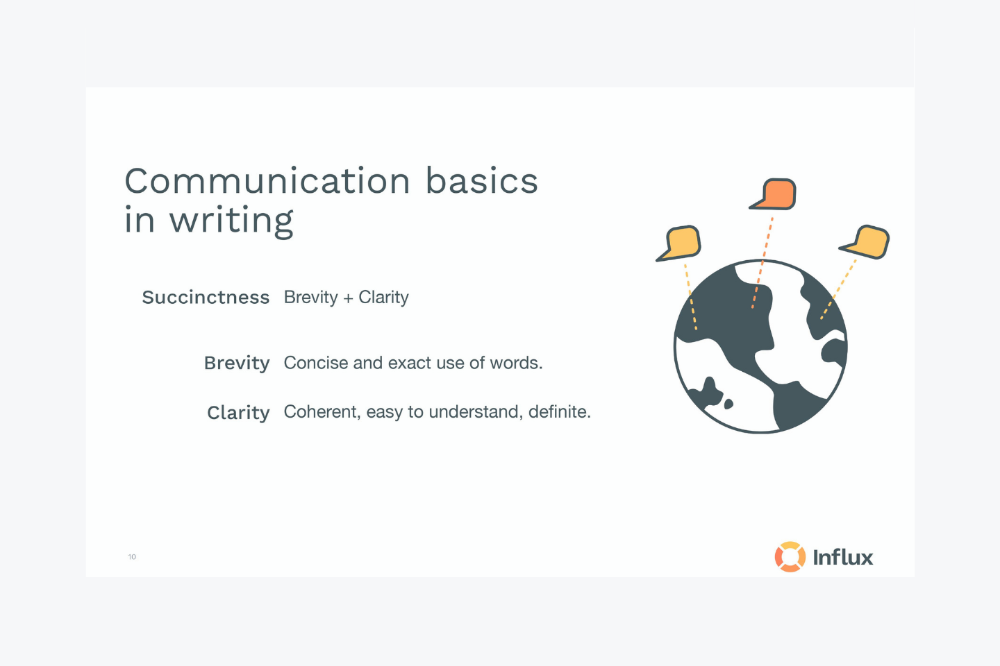
Brevity is using as few words as possible to fully convey whatever you wish to say and it is being respectful of the other person you are communicating with.
Now why is brevity crucial when we communicate? It’s because humans are incredibly sparing with their mental energy. So, if you want to explain something to me, imagine that I have 100 mental units to spare in a day. You can explain what you need to me and consume 20 units of my mental energy, or perhaps, you can do it in a way that only needs 5 units.
This way, I have more mental energy to spend on other things. And it also makes me feel respected and supported if you are using less of my mental energy in order to get what you need.
It takes more effort to define, clarify, and shorten your words to mindful brevity. It is asking more from whoever is writing or speaking, but this makes it easier for the reader or listener.
Clarity in our communication is at the heart of Influx. We have been a Work From Home company from day one. It is a benefit for us to hire people from anywhere. I believe that talent trumps location and this has enabled us to create a high quality team.
But it is easy for information and intentions to get lost across the distance especially with the different time zones we operate in. To mitigate this, clarity is a mechanism we use. Information is only successfully conveyed if it has been clearly understood.
With our written communication, we must pursue visual hierarchy – by this I mean, different discussion points, suggestions, and actionable items should be grouped under headings that are in bold or a different colour.
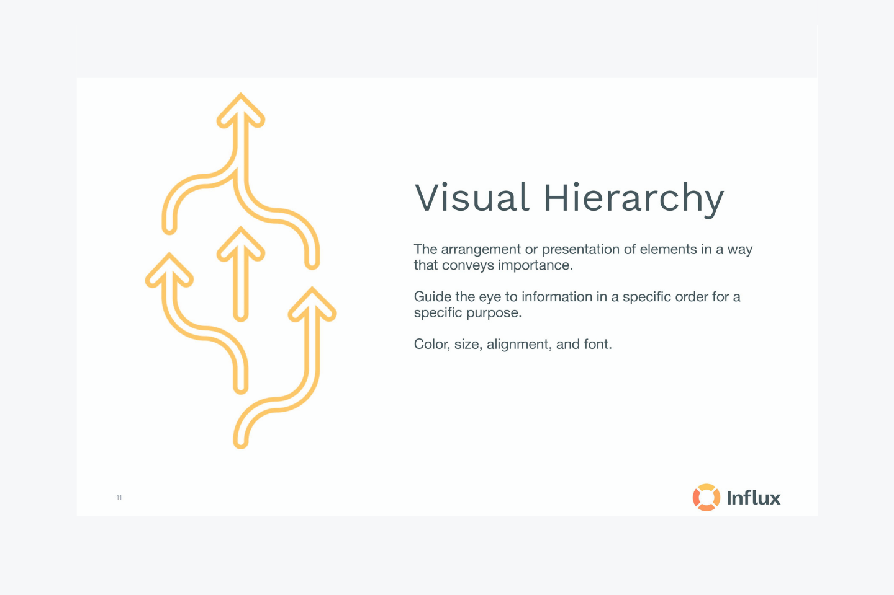
Books practise visual hierarchy where designers lead your eye to the chapter headings or titles in bold or large font sizes followed by any other pertinent information. This is visual hierarchy in practice, and it is just as important in our responses whether it’s through email or Slack.
Did Communication Really Happen?
George Bernard Shaw once said it brilliantly – The single biggest problem in communication is the illusion that it has taken place.
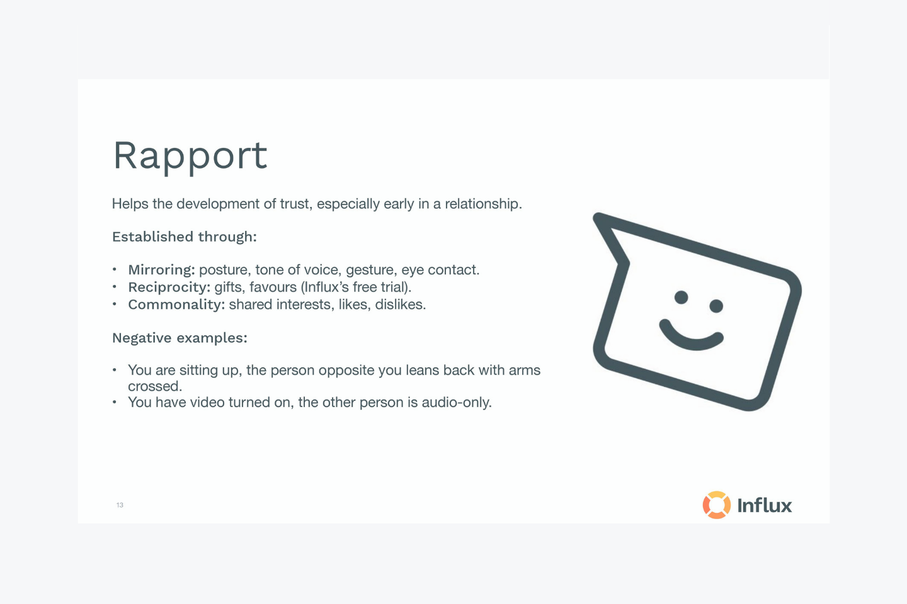
Now rapport is built when people exchange eye contact and connect over shared common ground or interests or gift giving in some cultures as examples of mechanisms humans use.
This is a reason why it is important for us to have the video turned on when we have a discussion.
In communication, we need to ensure that the message we send out is the message that has been received. How many times has there been “information loss” because the receiver did not “get it”?
We cannot engage in wishful thinking, or managing by hope, believing that what has been said is what has been received. Our job in conveying a message is only complete when we ensure that the message has been received and understood correctly.
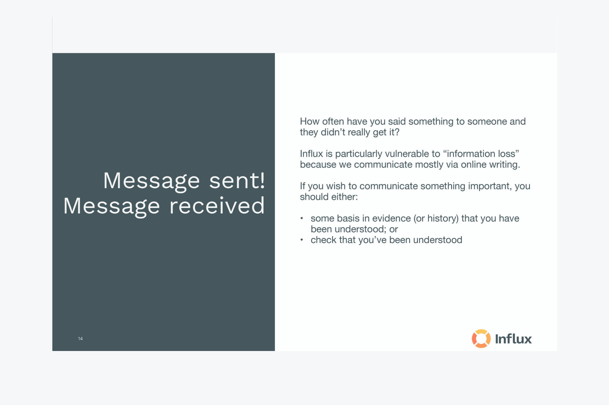
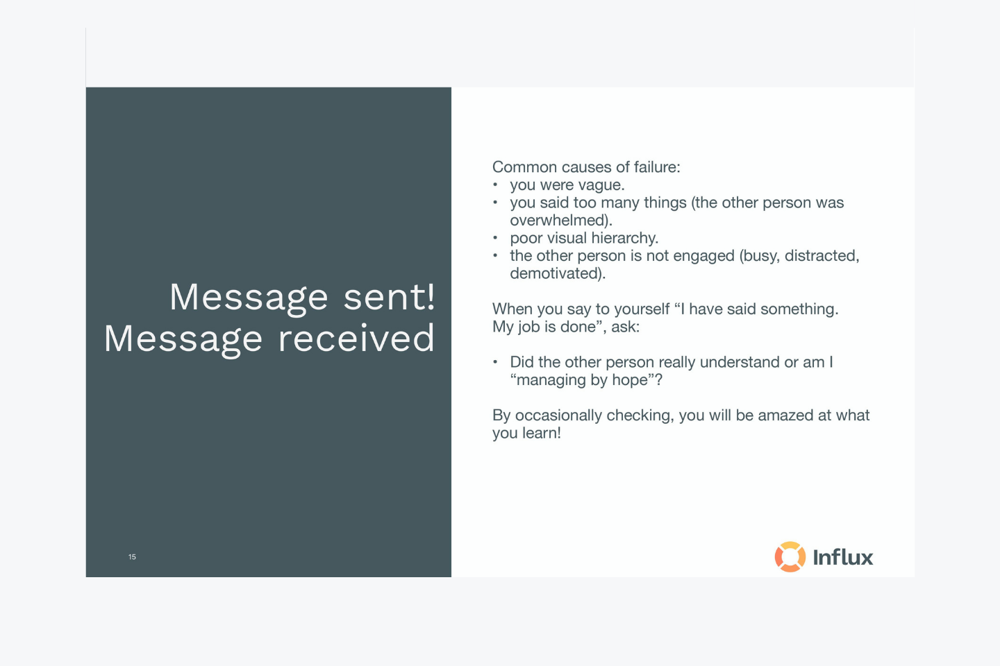
Communication is not only in speaking, but listening is part of the equation of communication as a way to build trust and generate confidence.
Having recruited hundreds of staff members in the earliest days of building Influx has given me invaluable practice listening to people. I believe that listening is the most important quality we can learn to master, especially in the relationship between a manager and his team.
We need to listen to not just the words, but unspoken words between the lines. As an agent, if you can understand and anticipate a basic query by a customer, perhaps by paraphrasing, and provide an appropriate response, it makes the customer feel heard, understood, and supported, in other words, they feel great!
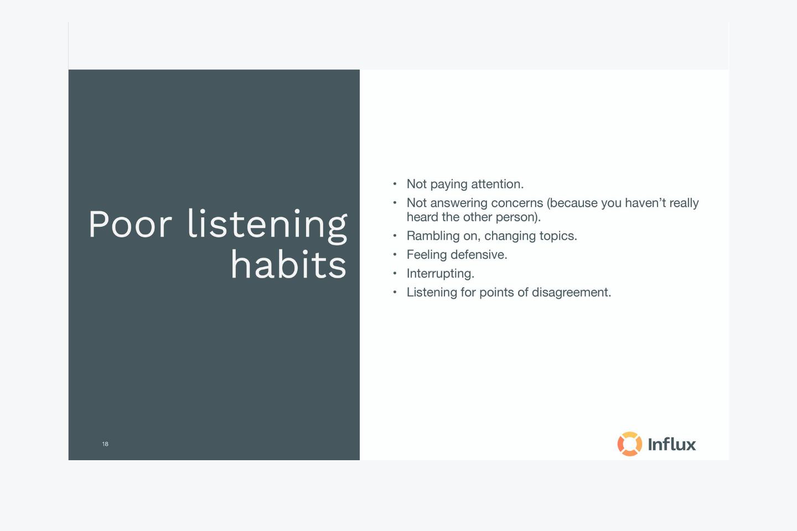
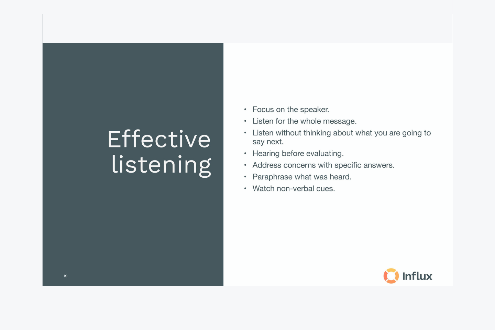
The Simplest Way to Acquire Reliability
If you want to create confidence that you are reliable, this emerges through your actions – do what you say you will do and by the deadline. If for reasons beyond your control that you cannot deliver by the deadline, you have to say so before it approaches to avoid unmet expectations.
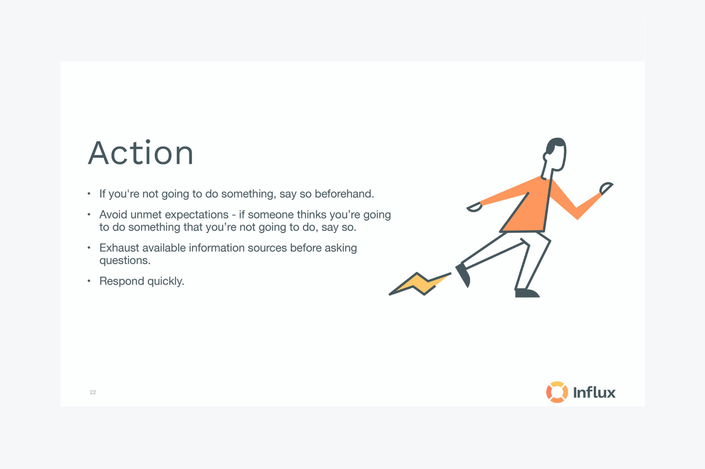
Dealing With The Real Elephants - Emotions
My background is in computer science, and a software engineer is not known for skills in navigating emotional landscapes. I used to think that people were primarily rational, making decisions using reason and evidence. And that only occasionally, emotions get in the way and disrupt us.
Now I think in the reverse manner – that people primarily make decisions based on their emotions and occasionally, reason comes in.
American social psychologist Jonathan Haidt in his book Moral Foundations uses the metaphor of a rider on an elephant. The elephant represents Emotions, and the rider represents Reason. Now the rider might think he is running the show, but he is really riding on his elephant, which are his emotions.
We have to acknowledge the existence of the elephant. And that is a very good start. We must remember that people are not robots.
As such, we have made a commitment to telling the truth at all times.
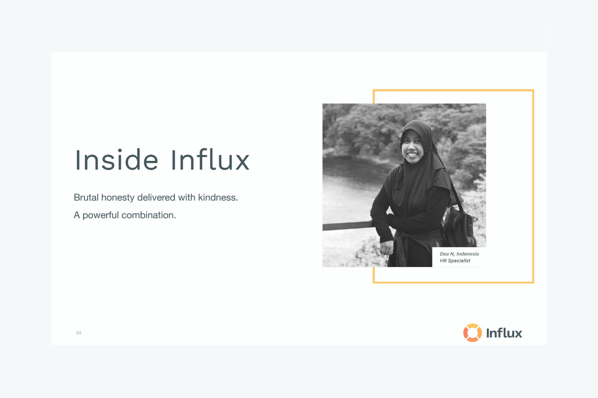
Now why did I sandwich honesty between “brutal” and “kindness”?
Because sometimes, the barrier to honesty are emotions.
Let’s look at the manager’s relationship with his team for example. One of my least favourite experiences in Influx is the exit interview with someone fired for performance reasons. They’d say to me, “it’s not fair”. And I ask, “Why? It’s clear to me that there has been a performance issue.” But then they say, “Why wasn’t I told?”
The team member here is not clear that there has been a performance issue.
So, what happened? My diagnosis is that one of the dynamics that took place had issues.
Now for managers across any culture, firing people is super hard as it should be. After all, I do not want to work in a company where people are fired easily. So why has the manager in this instance not been clear about performance issues with his staff member?
One of the dynamics at work is that people want to get along.
People want to be prosocial. We want to be agreeable with each other. Sometimes, because I want to have a good relationship, we are nice people. And even when my performance is lacking, you find it hard to say “Leni, your work performance is poor.” I didn’t get the hint. I didn’t get it that you think my work performance is weak.
To overcome this, being brutal is not about being violent or destructive, but it requires a certain emotional commitment as a manager to just to get to the heart of the matter.
What I do understand is that people want their bosses to be brutally honest with them. But it’s the managers who find it difficult to be honest with their subordinates.
Honesty is the middle ground. Being brutal in this context means an emotional commitment - but tempering or softening the delivery with kindness, tolerance, and forgiveness.
We are not using honesty as a weapon. But we use kindness to deliver what we need to say. I had to choose only one word for this section of my presentation, so I chose kindness, but tolerance and forgiveness are just as important.
Navigating Across Emotional Safety
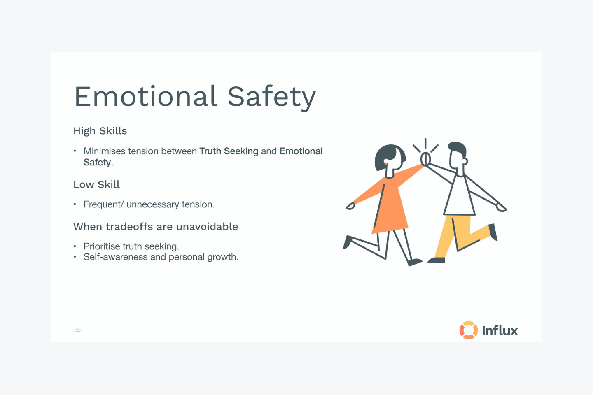
Once I came out of a meeting in which someone had their video turned off as we were talking about a commercially important matter. The thing on my mind was “why did this person turn off their video?”
So, I had a simple conversation with this person. I just asked, “why did you have your video turned off?”
His response was, “I am protecting myself.”
It was a defensive measure to protect their sense of emotional wellbeing. They had felt unsafe so they turned off their video as a protective means.
With skill, you can be brutally honest, yet not trigger defensive measures in people where they feel attacked. Low-skilled people however, when tackling emotional issues, are more likely to trigger defensiveness in people.
What is needed is for people to feel that they are not being attacked, but that what you have to say is not a personal criticism, rather, it is feedback on professional performance and behaviour.
With skill, if a situation is unavoidable where you need to prioritise between protecting emotional safety or truth telling, we should err on the side of truth telling. By doing that, it means that I am part of the landscape where I am also sacrificing my emotional safety on the altar of truth telling. That is the realm to personal development.
We are going to develop more effectively personally when we are closer to the truth. We do our best to avoid that trade-off. But ultimately, if you have to compromise emotional safety to tell the truth, I’d argue for you to do that because it would be better for you and for me.
How to Handle Feedback
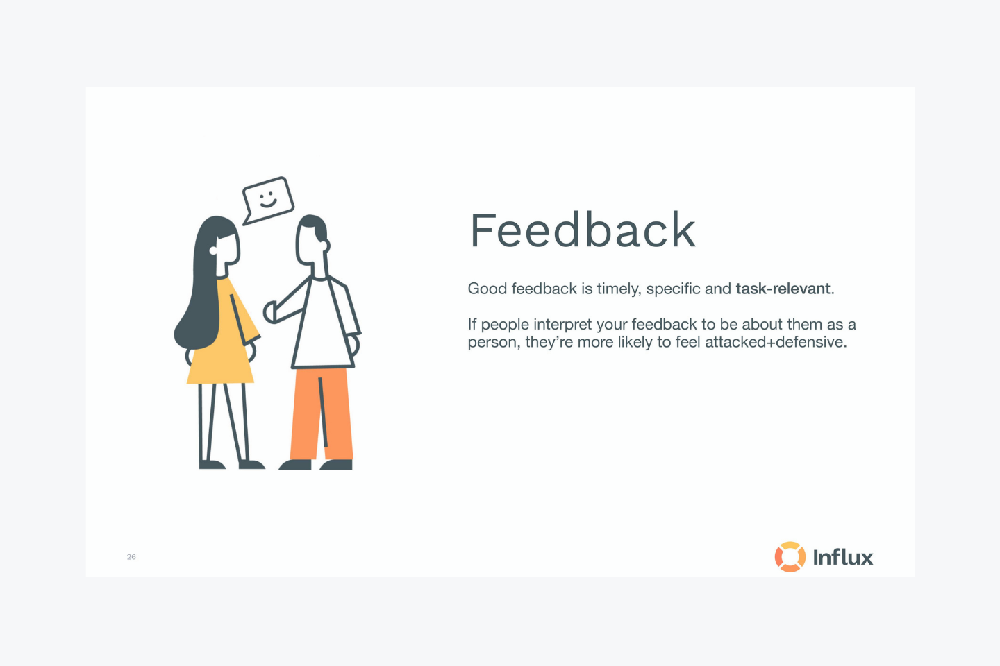
To me, feedback should be delivered hot and fresh.
When you are giving feedback, it is not directed at people themselves, but it is usually about their relationship to specific tasks and performance.
Andrew Grove’s book Higher Up Management suggested giving notion of task relevant feedback – so if I’m doing something wrong, and you want to give me feedback on it, you need to word it this way, “Leni, in relation to that task you were doing, it could have been done better in this way…”
By doing this, it becomes clear to me you are not making the judgment about me personally. I can de-personalise that feedback.
But if you say, “Leni you are a bad person, I don’t trust you, you don’t tell the truth”, I would feel personally attacked, even though it is usually not someone’s intent to do that, as they are talking about performances related to a task.
It is easy to blur the lines. So don’t blur the lines. Make it clear that the feedback is task-relevant and task-related.
Self-Orientation
Finally, self-orientation – having good self-orientation simply means that you are in control of your mind, you are calm, and have mental energy to direct outwards to other things beyond yourself. And this projects confidence between managers and their teams.
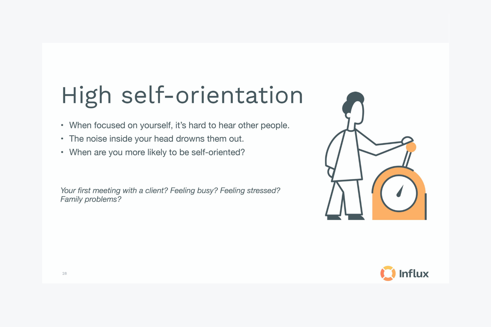
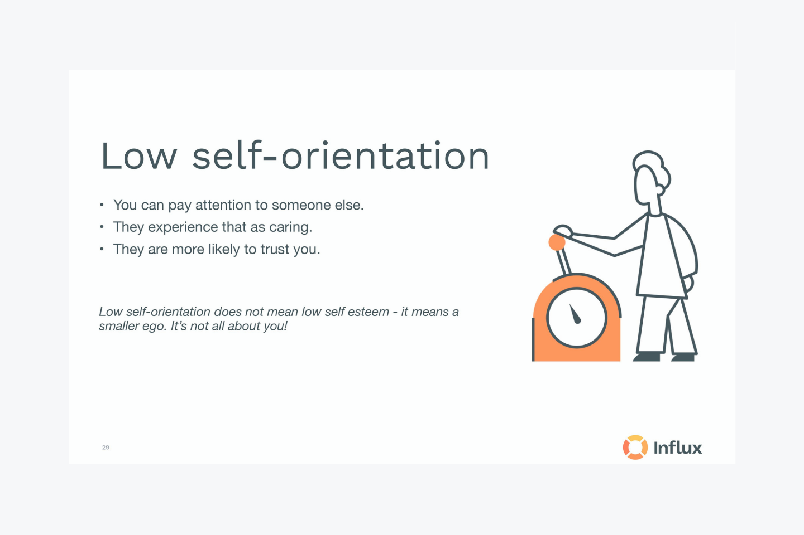
For more information on how Influx has helped built over 200+ customer support teams worldwide that provides 24/7 consistent, high quality customer service, call us for a chat.